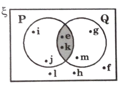
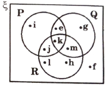
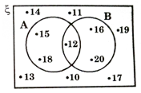
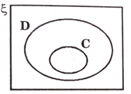
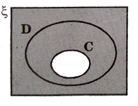
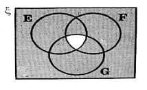
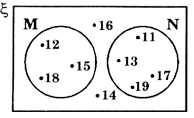
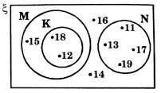

Solved examples
Example 1:
Question:
Represent the following sets using Venn diagrams.
-
G = {red, yellow, blue, white}
-
H = {x : x is an even number, \( 1 \leq x \leq 10} \) .
Solution:
(a) G = {red, yellow, blue, white}
(b) H = {2, 4, 6, 8, 10}
Example 2:
Question:
Given set J is the set of factors of 40.
-
List the elements of J.
-
State the number of elements in J.
Solution:
-
J = {1, 2, 4, 5, 8, 10, 20, 40}
-
n(J) = 8
Example 3:
Question:
Determine whether the following sets are empty sets.
-
M = {an integer whose square is a negative value}
-
N = {a triangle with 4 equal sides}
-
P = {even prime numbers}
Solution:
-
M = \( \varnothing \) because the square of all integers are positive.
-
N = \( \varnothing \) because a triangle has only 3 sides.
-
\( P \neq \vernothing \) because 2 is a prime number.
Example 4:
Question:
Determine whether the following sets are equal.
-
Q = {even numbers which are less than 10}
R = {first 4 multiples of 2} -
S = {prime numbers which are less than 10}
T = {first 5 odd numbers}
Solution:
-
Q ={2, 4, 6, 8}, R = {2, 4, 6, 8}
Therefore Q = R -
S = {2, 3, 5, 7}, T = {1, 3, 5, 7, 9}
Therefore, \( S \neq T \)
Example 5:
Question:
Given K = {p, q, r, s, t, u}
L = {q, s, t}
and M = {p, q, s, t, w}
Determine whether
-
\( L \subset K \)
-
\( M \subset K \)
-
\( L \subset M \)
Solution:
-
All the elements in L are found in K. Therefore, \( L \subset K . \)
-
The element w is not found in K. Therefore, \( M \nsubseteq K . \)
-
All the elements in L are found in M. Therefore, \( L \subset M . \)
Example 6:
Question:
List all the subsets for the following.
-
A = {x, y}
-
\( B = {3, 4, 5, 6} \)
Solution:
-
{x}, {y}, {x, y} \( \varnothing \)
-
{3}, {4}, {5}, {6}, {3, 4}, {3, 5}, {3, 6}, {4, 5}, {4, 6}, {5, 6}, {3, 4, 5}, {3, 4, 6}, {3, 5, 6}, {4, 5, 6}, {3, 4, 5, 6}, \( \varnothing \)
Example 7:
Question:
Use a Venn diagram to illustrate the relationship between the sets and the universal set
-
\( \xi \) = {x : x is an integer, 1 \( \leq \) x \( \leq \) 10}
-
A = {x : x is a square number}
-
B = {x : x is a prime number}
Solution:
-
\( \xi \) = {1, 2, 3, 4, 5, 6, 7, 8, 9, 10}
-
A = {1, 4, 9
-
B = {2, 3, 5, 7}
Example 8:
Question:
Given \( \xi \) = {integer from 1 to 10}.
Determine the complement of the following sets.
-
A = {even numbers}
-
B = {square numbers}
Solution: \( \xi \) = {1, 2, 3, 4, 5, 6, 7, 8, 9, 10}
-
A = {2, 4, 6, 8, 10}
A' ={1, 3, 5, 7, 9} -
B = {1, 4, 9}
B' = {2, 3, 5, 6, 7, 8, 10}
Example 9:
Question:
From the Venn diagram, determine
-
n(C')
-
n(D')
Solution:
-
C' = {m, s, r, t, v}, n(C') = 5
-
D' = {p, q, u, r, t, v}, n(D') = 6
Example 10:
Question:
In the given Venn diagram,
where G = {members of Gopi group}
k = {members of krishna group}
H = {members of Harsha group}
-
determine
-
\( n( \xi) \)
-
n(H)
-
n(G')
-
-
state the relation ship between sets H, K and \( \xi \)
Solution:
-
-
\( n ( \xi) \) = 6 + 3 + 2 + 5 = 16
-
n(H) = 3 + 2 = 5
-
n(G') = 5 + 3 + 2 = 10
-
-
\( K \subset H \subset \xi \)
Example 11:
Question:
Given \( \xi \) = {integers from 1 to 20}
A = {two digits even numbers}
B = {multiples of 6}
and C = {multiples of 4}
Determine
-
\( A \cap B \)
-
\( A \cap C \)
-
\( A \cap B \cap C \)
Solution:
\( \xi = {1, 2, 3, 4,........, 20} \)
A = {10, 12, 14, 16, 18, 20}
B = {6, 12, 18}
C = {4, 8, 12, 16, 20}
-
A = {10, 12, 14, 16, 18, 20}
B = {6, 12, 18}
\( A \cap B \) = {12, 18} -
A = {10, 12, 14, 16, 18, 20}
C = {4, 8, 12, 16, 20}
\( A \cap C \) = {12, 16, 20} -
A = {10, 12, 14, 16, 18, 20}
B = {6, 12, 18}
C = {4, 8, 12, 16, 20}
\( A \cap B \cap C \) = {12}
Example 12:
Question:
Given \( \xi \) = {e, f, g, h, i, j, k, l, m}
P = {e, i, j, k}
Q = {e, g, k, m}
and R = {h, j, k, l, m}
Use venn diagrams to represent the following intersections
-
\( P \cap Q \)
-
\( P \cap R \cap Q \)
Solution:
-
P = {e, i, j, k, l}
Q = {e, g, k, m}
\( P \cap Q \) = {e, k} -
P = {e, i, j, k, l}
Q = {e, g, k, m}
R = {h, j, k, l, m}
\( P \cap Q \cap R \) = {k}
Example 13:
Question:
Given \( \xi = {x : 10 \leq x \leq 20, \ x \epsilon \ integers} \)
A = {multiples of 3} and B = {multiples of 4},
-
Represent set \( \xi \) A and B in a venn diagram
-
Determine
-
\( A \cap B \)
-
\( n(A \cap B)' \)
-
Solution:
\( \xi \) = {10, 11, 12, 13, 14, 15, 16, 17, 18, 19, 20}
-
A = {12, 15, 16, 18}
B = {12, 16, 20} -
-
A = {12, 15, 18}
B = {12, 16, 20}
\( A \cap B = {12} \) -
\( n(A \cap B) = 1, \ n( \xi) = 11 \)
Therefore, \( n(A \cap B)' \)
= 11 - 1
= 10
-
Example 14:
Question:
In each Venn diagram below, shade the region that represents
\( (C \cap D)' \)
-
\( (C \cap D)' \)
 -
\( (E \cap F \cap G)' \)

Solution:
-
\( (C \cap D)' \)
 -
\( (E \cap F \cap G)' \)

Example 15:
Question:
Given K = {2, 3, 5, 6}, L = {3, 5, 7} and M = {1, 2, 5, 7, 8}
-
\( K \cup L \)
-
\( L \cup M \)
-
\( n(K \cup L \cup M) \)
Solution:
-
\( K \cup L \) = {2, 3, 5, 6, 7}
-
\( L \cup M \) = {1, 2, 3, 5, 7, 8}
-
\( n(K \cup L \cup M) \) = {1, 2, 3, 5, 6, 7, 8}
\( n(K \cap L \cap M) = 7 \)
Example 16:
Given \( \xi \) = {integers between 10 and 20}
M = {multiple of 3}, N = {prime numbers} and k = {12, 18}
Using venn diagram represent the union of the following stes.
-
\( M \cup N \)
-
\( M \cup N \cup K \)
Solution:
\( \xi \) = {11, 12, 13, 14, 15, 16, 17, 18, 19}
M = {12, 15, 18}
N = {11, 13, 17, 19}
K = {12, 18}
-

-

Example 17:
Given \( \xi \) = {positive numbers that are less than 20}
P = {prime numbers} and Q = {factors of 100}
Find
-
\( P \cup Q \)
-
\( n(P \cup Q)' \)
Solution:
\( \xi \) = {1, 2, 3,...... 19}
P = {2, 3, 5, 7, 11, 13, 17, 19}
Q = {1, 2, 4, 5, 10}
-
\( P \cup Q \) = {1, 2, 3, 4, 5, 7, 10, 11, 13, 17, 19}
-
\( n(P \cup Q)' = n( \xi) - n(P \cup Q) \) = 19 - 11 = 8